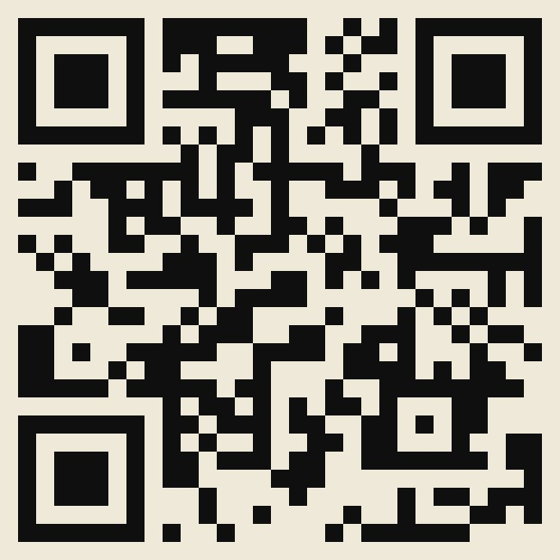

AI × RESEARCH · ZOTERO 外掛
ZotMax 新手上路
博士生的超前部署 · Zotero 主題
ZotMax
新手上路
把 Zotero 裡的文獻、劃線和評讀，自動整理進你的 Obsidian 或 Notion
Zotero
↓ ZotMax
Obsidian／Notion
報告人：宋建美 助理教授 ｜ 協助：游明勳 碩士生
A · 它是什麼
雜事交班給它，找文獻和寫作留給你
交給 ZotMax
- 書目、劃線、筆記同步到 Obsidian／Notion
- 閱讀狀態三邊一致（待讀、閱讀中、已讀、已引用）
- CASP／JBI 評讀表、PRISMA 計數與流程圖
- 中文文獻也有 APA 7 格式
留給你
- 決定研究問題、找文獻、訂納入排除
- 讀全文，自己回答每一題評讀
- 寫文獻探討、實證報告和論文
免費外掛，放在 GitHub 公開下載；大部分功能不需要 AI，也不需要付費服務。
沒用過也沒關係
三個軟體，各用一句話認識
Zotero
收文獻的書櫃
存書目和 PDF、畫重點、產生引用格式。一定要裝（Zotero 10）。
Obsidian
自己電腦裡的筆記本
筆記是一般文字檔，存在自己電腦；建議 1.14 以上，可以看彩色劃線和看板。
Notion
線上的資料庫
每篇一頁，手機也能看；設定精靈可以幫你建好資料庫。
Obsidian、Notion 至少選一個，兩個都要也可以
① 到 GitHub 下載 .xpi
Releases 頁面的 zotero-bridge-版本號.xpi（舊名，同一個外掛）
② Zotero → 工具 → 附加元件
打開外掛管理員
③ 齒輪 → Install Plugin From File
選剛剛下載的 .xpi，裝好後設定精靈會自動跳出來
新手選「研究生引導」
自動找文獻、AI 草稿先關著；整理、評讀、搜尋照常能用
選筆記放哪裡
Obsidian：選筆記庫資料夾
Notion：精靈會帶你接上資料庫
② 按工具列的 ZotMax 按鈕
選「同步到 Notion + Obsidian」
同步之後 · Obsidian
每篇文獻一份筆記
研究設計、證據等級、PICO
寫在屬性欄，可以排序、篩選、做成看板
最上方是重點摘要
劃線、評讀表、AI 筆記收在下面，點開才展開
重新同步不會蓋掉你寫的內容
ZotMax 只更新它自己產生的區塊
同步之後 · Notion 與閱讀狀態
每篇一頁，閱讀進度三邊一致
Notion 欄位自動建立
APA、摘要、評讀結果、評讀工具
改一邊，三邊跟著改
Obsidian 另有閱讀進度看板，拖曳卡片就能改
寫回顧論文時
它還能幫你做這些
篩選 · PRISMA
標題摘要、全文篩選存成標籤，產生 PRISMA 2020 流程圖
CASP · JBI 評讀
逐題記下答案與根據，雙人評讀可算 Cohen's κ
概念串成網
概念卡片把多篇文獻連起來，在 Obsidian 看關聯圖
進度報告
整理閱讀與篩選進度給指導教授，不需要 AI
另有：醫學資料庫搜尋與 PICO 檢索式、PubMed 新文獻追蹤、引文追蹤（OpenAlex）、文獻比較表。
AI 是選用的
要用 AI，先知道這三件事
自備 API 金鑰
Claude 或 OpenAI，依用量付費；Claude Pro、ChatGPT Plus 訂閱不能用
大量產生先估費用
批次 API 約半價、最久等 24 小時；大量作業前會請你確認
方向盤在你手上
用 ZotMax，記住三件事
01
從引導模式開始
先用不花錢的整理與同步，熟了再開 AI
02
回原文核對
AI 筆記和評讀是初稿；數字、引用自己翻回 PDF 看
03
判斷留給自己
納入排除、評讀結果由你決定；它只負責記錄和計數
老師最常問
Q&A
要付費嗎？
外掛免費，大部分功能不用 AI。AI 功能用自己的 API 帳號另外計費。
只用 Obsidian 或只用 Notion 可以嗎？
可以，至少接一個就能用；兩個都接也可以。
文獻會被送給 AI 嗎？
只有開啟 AI 功能並設定金鑰時才會送；自動同步不呼叫 AI。病人資料不要放進 AI 筆記。
中文文獻可以嗎？
有中文 APA 7 專用格式，也能檢查並修正匯入資料的常見錯誤，改錯可以復原。

bobyu89.github.io/ZotMax
01 • 14
← → 換頁 F 全螢幕 N 講稿 ? 說明